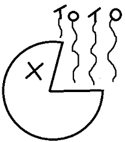

CLICK ON THE ANSWER BUTTON TO ATTEMPT TRUE OR FALSE OPTIONS BASED ON THE STATEMENT ABOVE THE ANSWER BUTTON
Analyse the following statements and decide whether they are true or false-:
Bronchopneumonia has a characteristic:
Analyse the following statements on tuberculosis and decide whether they are true or false-:
Analyse the following statements and indicate whether they are true or false:
Giant multinucleated cells are not seen in:
The typical features of Kawasaki disease/arteritis:
Kawasaki disease.
Squamous cell carcinomas of the lung: